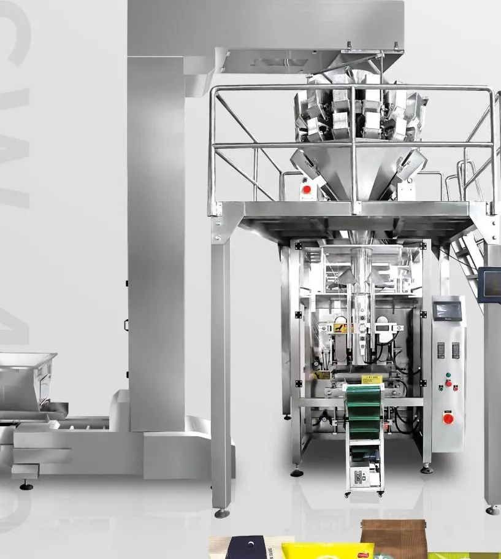

Vertical Form Fill Seal Machine (FL-V420 to FL-V900)
Models: FL-V420 / FL-V520 / FL-V620 / FL-V730 / FL-V900
The bag-making mainframe at the heart of most packing lines — five frame sizes from 420 to 900 mm film width, matched with a weigher, cup filler, auger or liquid pump.
- Speed
- up to 70 bags/min
- Film width
- 120–900 mm
- Bag length
- 60–1000 mm
- Bag width
- 50–435 mm
- Film
- 0.04–0.12 mm
- Power
- 220 V, 3–4 kW
At a glance: Vertical Form Fill Seal Machine (FL-V420 to FL-V900) (FL-V420 / FL-V520 / FL-V620 / FL-V730 / FL-V900): speed up to 70 bags/min; film width 120–900 mm; bag length 60–1000 mm; bag width 50–435 mm; film 0.04–0.12 mm; power 220 V, 3–4 kW.
What it packs
Granules, snacks, rice, beans, sugar, salt, frozen food, ice cubes, detergent, fertiliser — any product with a suitable feeder.
Key features
- Bag styles: back-seal pillow, gusset / stand-up, hanging-hole bags.
- Servo film pulling, automatic film-deviation correction.
- Multiple alarm and protection functions to reduce waste.
- Fast and high-speed versions available.
- Frame size and contact-part material chosen to suit bag size and product.
How our automatic vertical form fill seal system operates
An automatic vertical form fill seal system pulls flat roll film over a forming collar, seals the vertical back seam, accepts the weighed or metered product dose, and completes the horizontal seal and cut in one vertical cycle. Servo film pulling and automatic film-deviation correction keep pillow, gusset, stand-up and hanging-hole bags neat from 50 mm to 435 mm wide.
Continuous motion vertical packaging unit & granule sealing
For higher throughput, fast and continuous motion vertical packaging unit configurations on the FL-V420 and FL-V520 reach up to 70 bags/min, while larger FL-V730 and FL-V900 frames handle up to 10 L and 18 L bag volumes. Paired with a linear weigher or volumetric cups, this mainframe works as dependable vertical granule sealing equipment for rice, sugar, beans, detergent and frozen food.
Vertical Form Fill Seal Machine technical specifications
| Model | FL-V420 | FL-V520 | FL-V620 | FL-V730 | FL-V900 |
|---|---|---|---|---|---|
| Packing speed (bags/min) | 70 | 70 | 50 | 45 | max 30 |
| Film width | 120–420 mm | 160–520 mm | 260–620 mm | 260–730 mm | 560–900 mm |
| Bag length | 60–330 mm | 80–350 mm | 80–400 mm | 80–470 mm | 380–1000 mm |
| Bag width | 50–200 mm | 70–250 mm | 120–300 mm | 120–350 mm | 260–435 mm |
| Suitable materials | Granules, snacks, rice, beans, sugar, salt, frozen food, powder & liquid | ||||
| Metering / dosing method | Multihead weigher, linear weigher, volumetric cups, auger filler or liquid pump | ||||
| Contact material | SUS304 stainless steel (SUS316L optional) | ||||
| Film thickness | 0.04–0.09 mm | 0.04–0.09 mm | 0.04–0.09 mm | 0.04–0.09 mm | 0.06–0.12 mm |
| Air | 0.8 MPa 0.3 m³/min | 0.8 MPa 0.3 m³/min | 0.8 MPa 0.4 m³/min | 0.8 MPa 0.5 m³/min | 0.8 MPa 0.6 m³/min |
| Power | 3 kW 220 V | 3.4 kW 220 V | 3.8 kW 220 V | 3.8 kW 220 V | 4 kW 220 V |
| Dimensions | 1460×1050×1410 | 1480×1130×1450 | 1600×1300×1790 | 1630×1400×1960 | 1990×1630×2400 |
| Weight | 400 kg | 480 kg | 600 kg | 700 kg | 900 kg |
| Max bag volume | 2.5 L | 4.3 L | 7 L | 10 L | 18 L |
Speed and accuracy depend on the product, fill weight and film. Specifications may be customised.
Material & warranty: SUS304 stainless steel (SUS316L contact parts optional) · 18-month machine warranty (wear parts excluded) with lifetime technical support.
Options & configurations
Feeding/dosing: multihead weigher, linear weigher (4-head or large 2-head), volumetric cups, auger filler, liquid pump. Elevators: Z-type, incline, big-bucket. Coding, nitrogen, gusset, punch hole.
Video: Vertical Form Fill Seal Machine running test
Running video: automatic vertical form fill seal machine with a linear weigher and incline conveyor packing puffed snack granules into pillow bags.
FAQ about the Vertical Form Fill Seal Machine
Which frame size should I choose?
Choose by bag width: the film width ≈ (bag width + 10 mm) × 2. For a 200 mm wide bag you need ~420 mm film, so the FL-V420 or FL-V520. Larger 5–25 kg bags need the FL-V730 or FL-V900.
Linear weigher or multihead weigher?
Linear weighers are economical for free-flowing, uniform granules (sugar, rice, beans) at moderate speed. Multihead weighers are faster and better for irregular products like chips and candy.
What film materials work on a vertical form fill seal machine?
Heat-sealable laminated films from 0.04 to 0.12 mm thick such as OPP/CPP, PET/PE, PET/AL/PE and nylon/PE, as well as PE film when fitted with matching sealing jaws.
What warranty and testing support are included with the VFFS mainframe?
Every VFFS machine includes free sample testing with your product and film before ordering, FAT video approval before shipment, an 18-month machine warranty (wear parts excluded) and lifetime technical support.
Related machines

Multi-function Vertical Snack Packer
A complete weigh-and-bag line for chips, puffed snacks, nuts, candy, dried fruit, frozen dumplings and pet food: Z-type elevator → multihead weigher → VFFS bagger → output conveyor.
View specs →
Full-auto Coffee Powder Sealing Machine
Screw feeder → auger filler → vertical bagger for coffee powder, milk powder, flour, starch, spices, protein and chemical powders, with dust-controlled filling.
View specs →
Vertical Sachet Liquid Packaging Machine
Pumps and seals sauces, ketchup, edible oil, honey, vinegar, shampoo and liquid detergent into pillow sachets — viscosity-matched pumping for clean, leak-free seals.
View specs →Get a quote for the Vertical Form Fill Seal Machine
Tell us your product, pack weight and speed. An engineer replies within 24 hours with a recommended configuration, layout and price. Free product testing with video.